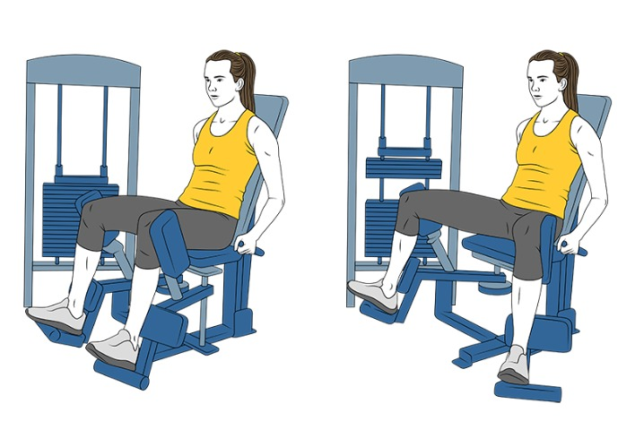
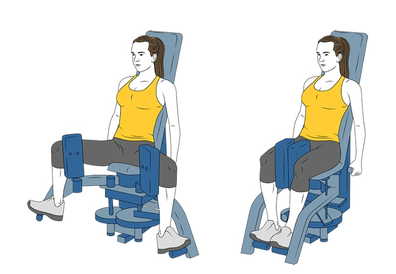
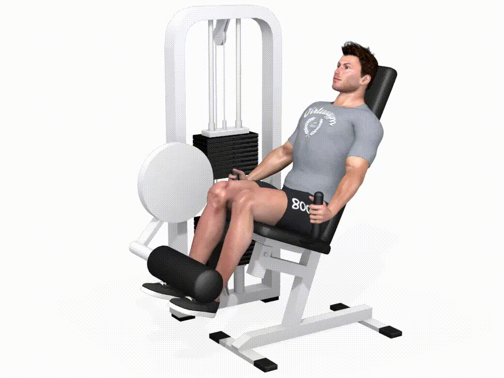
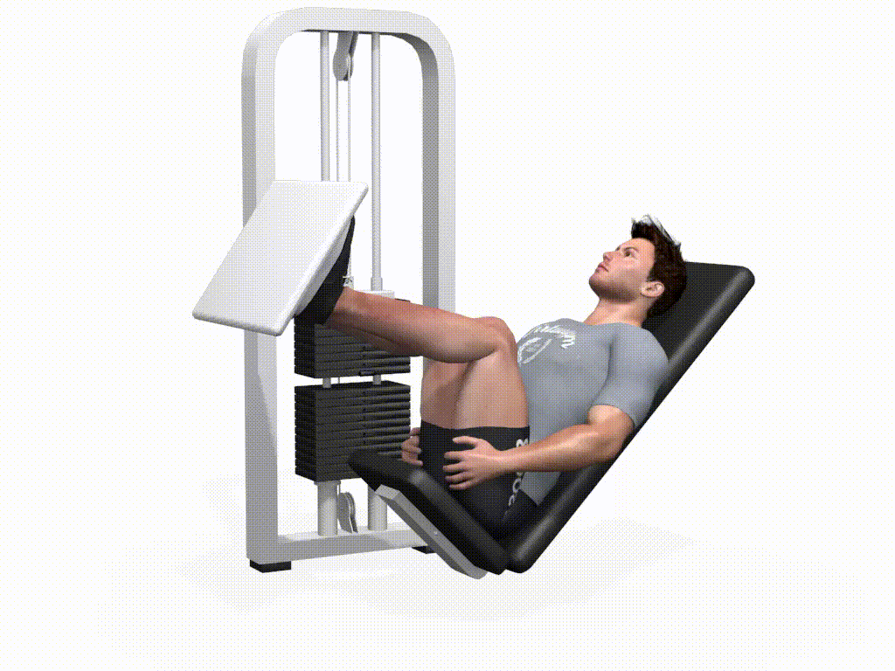
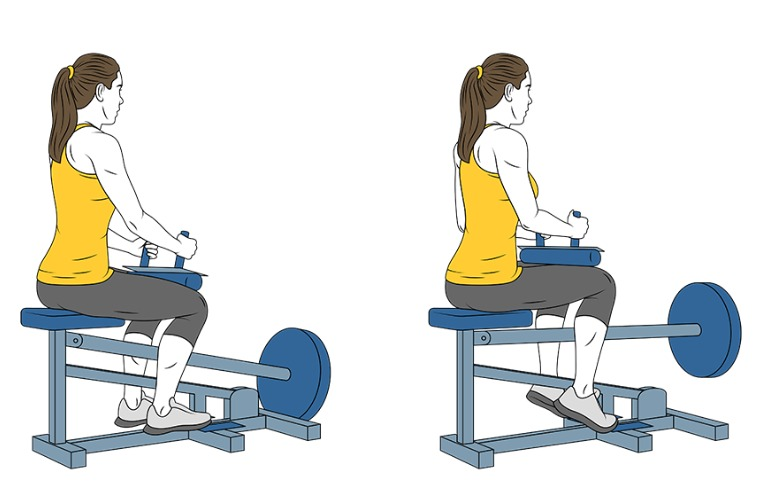
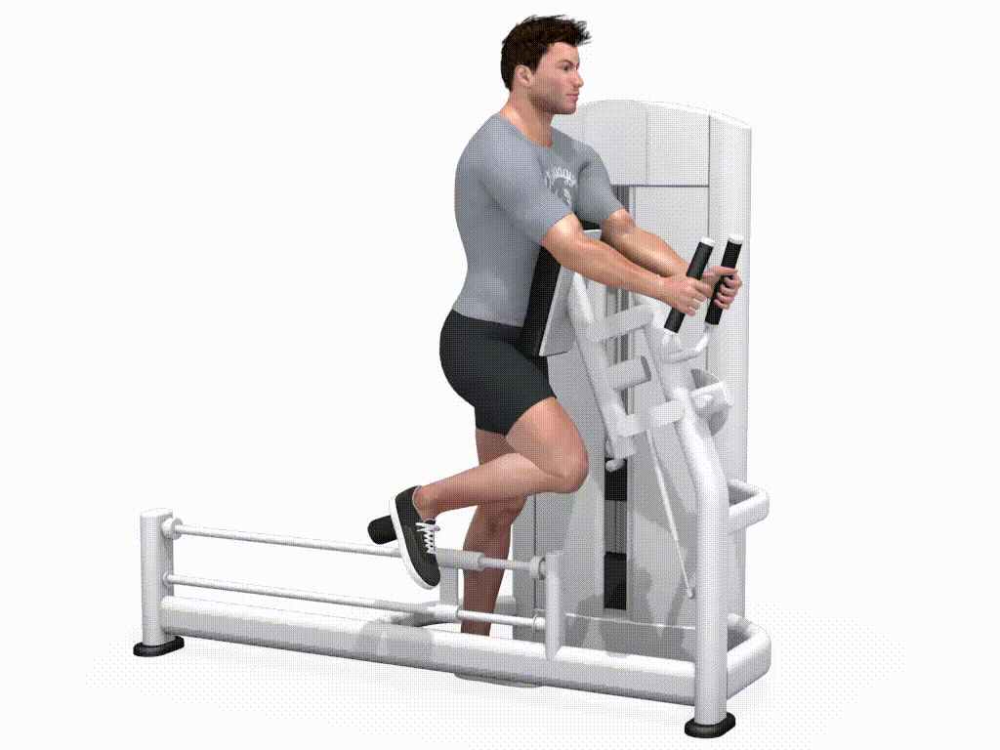
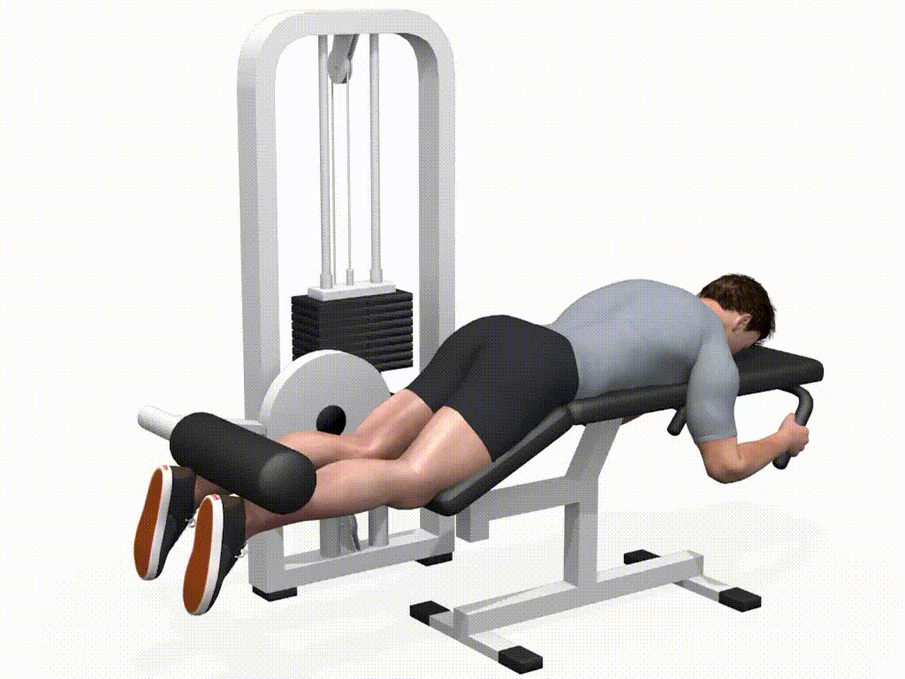
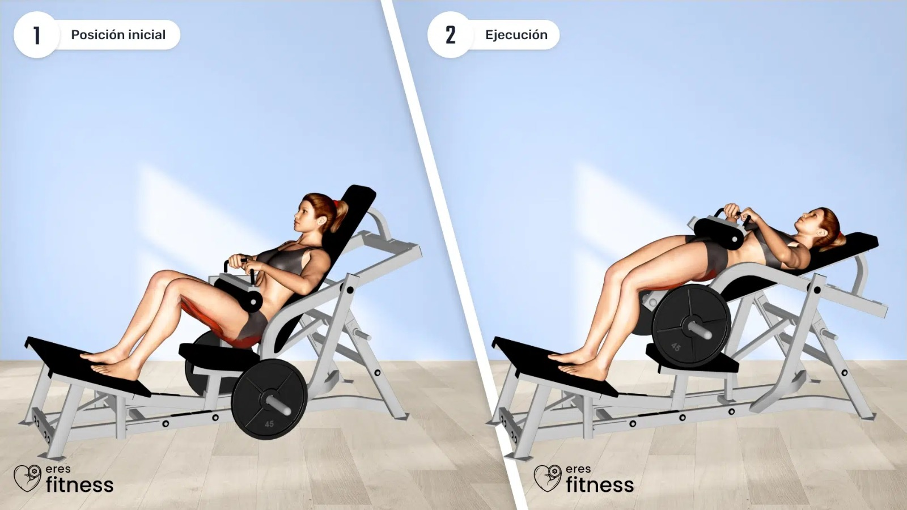

Cómo se hace: M谩quina de abductores: sentado, abrir las piernas contra la resistencia.
Cómo se hace: M谩quina de aductores: sentado, cerrar las piernas contra la resistencia.
Cómo se hace: Sentado en la m谩quina, colocar las almohadillas sobre las tibias y extender las piernas hacia arriba.
Cómo se hace: Colócate en la m谩quina con la espalda bien apoyada y los pies separados a la anchura de los hombros sobre la plataforma. Baja lentamente la plataforma flexionando las rodillas hasta que formen un 谩ngulo de 90掳. Luego, empuja controladamente hacia arriba sin bloquear las rodillas al final del movimiento.
Cómo se hace: M谩quina para gemelos: ponerse de puntillas, con el peso encima de los hombros. Subir y bajar lentamente.
Cómo se hace: Con polea baja o peso corporal, dar una patada hacia atr谩s con una pierna y luego con la otra.
Cómo se hace: Tumbarse boca abajo en la m谩quina, colocar los tobillos debajo de los rodillos, y llevar los pies hacia los glúteos.
Cómo se hace: Apoyar la parte superior de la espalda en un banco, apoyar los pies en el suelo y empujar la cadera hacia arriba con peso.
